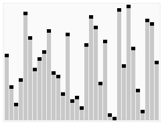
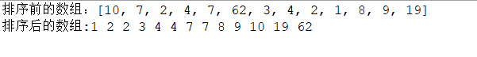

快速排序：
它的基本思想是：通过一躺排序将要排序的数据分割成独立的两部分，其中一部分的所有数据都比另外一不部分的所有数据都要小，
然后再按次方法对这两部分数据分别进行快速排序，整个排序过程可以递归进行，以此达到整个数据变成有序序列。最坏情况的时
间复杂度为O(n2)，最好情况时间复杂度为O(nlog2n)。
图解：

我已经将代码的关键步骤都大了注释，希望可以帮助理解。
//瞎打快排
package sdx;
import java.util.Arrays;
public class Main6 {
public static void quickSort(int[] arr,int left,int right){
int i,j,JiShu;
if(left>right){
return;//当左边大于右边时，方法不合法，所以return结束这个方法
}
//定义哨兵
i=left;
j=right;
//JiShu就是基准位
JiShu = arr[left];
//当i和j不相遇时，再循环中进行检索。
while (i!=j) {
//先看右边，依次往左递减S
while (JiShu<=arr[j]&&i<j) {//i<j是为了是为了不让在i和j相遇时错过。
j--;//哨兵j向左继续移动。
}
//再看左边，依次往右递增
while (JiShu>=arr[i]&&i<j) {
i++;//哨兵i向右继续移动。
}
//如果满足条件则交换
if (i<j) {
int t = arr[j];
arr[j] = arr[i];
arr[i] = t;
}
}
//最后将基准为与i和j相等位置的数字交换（递归大法）
//定义时左边第一个为 “基数”。将重合时的数与基数交换。将重合后的数放在左边第一个。
arr[left] = arr[i]; //a[i]与a[j]都可以，因为i,j重合，位置相同。
arr[i] = JiShu; //将新数列的基数设置为最左边那个数。
//递归调用左半数组
quickSort(arr, left, j-1);//调用自身
//递归调用右半数组
quickSort(arr, i+1, right);
}
public static void main(String[] args) {
int[] arr = {10,7,2,4,7,62,3,4,2,1,8,9,19};
System.out.println("排序前的数组："+Arrays.toString(arr));
quickSort(arr, 0, arr.length-1);
System.out.print("排序后的数组:");
for (int i = 0; i < arr.length; i++) {
System.out.print(arr[i]+" ");
}
}
}
运行截图：
